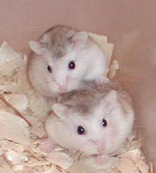
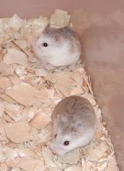
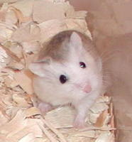

| Roborovski Dwarf Hamsters | ||||||||||||||||
|  | ||||||||||||||||
|  | ||||||||||||||||
|  | ||||||||||||||||
| These hamsters demonstrate a new mutation in the Roborovskis. It's the first known mutation in this species, and it is a dominant mutation. This mutation was discovered in a pet store in Sweden. It is tentatively called "White Faced" although there is also white coming up the sides from the belly. | ||||||||||||||||
| Rob Baby Pictures | ||||||||||||||||
| Rob Litter Progression | ||||||||||||||||